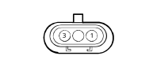

D029 Engine cables/engine services cable coupling(ENGINE)
- Path
- Electrical equipment > Connectors > D Intermediate couplings > D029 Engine cables/engine services cable coupling > D029 Engine cables/engine services cable coupling(ENGINE)
- Kind
- connector pinout (pin -> wire colour -> other end)
- Applies to
- engines: 3.0 V6, 3.2 V6; all production periods
- Interactive page
- https://sloeber94.github.io/elrnDB-lThss/en/#/28005773
Applies to: engines: 3.2 V6; all production periods

Wiring | Colour |
|---|---|
50 ENGINE |
Pin | Cable | Destination | |||
|---|---|---|---|---|---|
Diameter | Colour | Node | Connector | Pin | |
Applies to: engines: 3.0 V6; all production periods
Wiring | Colour |
|---|---|
50 ENGINE |